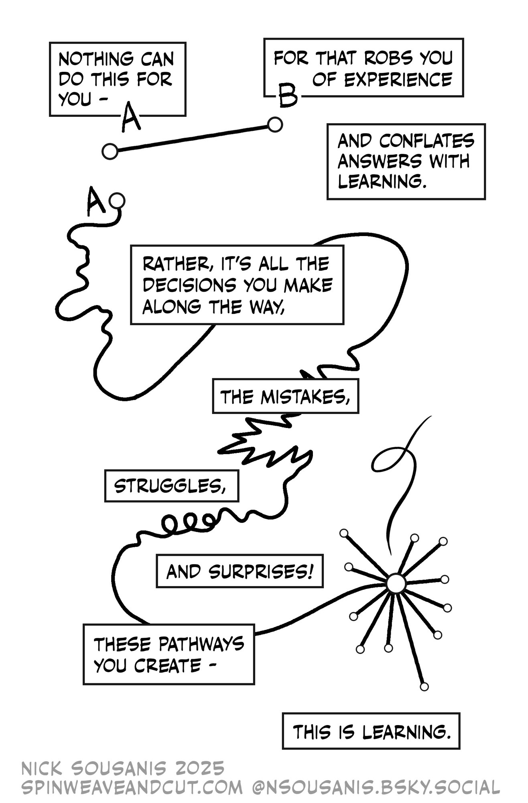

MTH 401 – Real Analysis
Spring 2026, University of Portland
Welcome!
Before we get into the details of the course, I want to share with you a few thoughts about my general approach to teaching and learning. My main goal as the professor in this course is to help you succeed in not just learning the material but in growing as a learner. Learning takes effort, a willingness to try something that may not work, and the ability to use feedback to refine your understanding. My job is to foster an environment in which each and every one of you are supported in these aspects.
Much of the work for this course will be done within class or small group discussions for which we will rely on everyone in this class as a source for feedback and support. Because of this, it’s important that we create an inclusive community that is respectful of our differences and offers space for the boundary-setting necessary for positive relationships to form. Our diversity is reflected by differences in race, gender, sexuality, ability, class, religion, nationality, and other cultural identities and material circumstances.
1 General Information
- Instructor: Chris Hallstrom, PhD (he / him / his).
- Office: Buckley Center 270
- Email: hallstro@up.edu.
- Webpage: All course content will be posted on Moodle
- Dr. Hallstrom’s Calendly link.
1.1 Course Description
In this course, we will revisit the fundamental concepts and results from Calculus with the goal of understanding better how the basic theorems and results follow from foundational definitions and axioms. We will consider the question of how we can make these concepts and arguments precise as well as how we can communicate mathematical ideas clearly. Specific topics will include the axioms for a complete ordered field, the formal defintion of the limit, continuity for both sequences and functions, and the derivative. We will investigate and prove various properties and consequences that follow from these topics.
In addition to content learning, we will also focus on the task of communication of rigorous mathematical argument. By the end of the semester, you should be able to
- effectively communicate mathematical ideas orally using correct terminology and language
- develop and write correct and complete mathematical proofs using the standards and conventions of the discipline.
Inquiry Based Learning
We will use a method of instruction often called Inquiry Based Learning (IBL) which is designed to engage and foster skills and habits that working mathematicians use regularly; you will be asked to solve problems, make conjectures, experiment, explore, create, collaborate, and communicate your work with your peers. Rather than giving you facts to memorize or showing you clear paths to solutions, my role is to guide you via a sequence of carefully chosen problems through a journey of mathematical discovery.
Throughout the semester, you will receive a list of definitions to interpret and make sense of, as well as exercises and theorems which you and your classmates will answer or prove. There will be very little traditional lecture. Instead, class time will consist of student presentations of new material. For best results, you should come to class prepared to share your work or ideas about that day’s problems. This method of inquiry does not work nearly as well if you’re looking at problem for the first time in-class.
You will be asked to share your solutions and explain your thinking in class regularly. You will be asked to generate examples and counterexamples, to make conjectures, and to prove or disprove these conjectures. When observing other student presentations, it is your responsibility to follow their argument closely and decide if their explanations are reasonable. If you cannot follow their logic, or have questions about their solution, it is your responsibility to ask!
A key feature of our IBL method is student discovery and therefore outside resources are not allowed. This means that you should not consult any texts (other than the notes handed out in class), the internet, students not currently enrolled in the course, or faculty other than myself. Consulting outside resources will deprive you of opportunities to engage with the material. You are encouraged to work with your classmates on the problems, although every student must write up and submit their own solutions to written work. You can always ask me for help if you’re stuck on a problem.
1.2 Course Materials
We will use a set of course notes that I will provide. Both hard copies and electronic versions will be available. No other materials are needed.
1.3 Attendance
Since we will be doing much of our learning through collaborative in-class activities, it’s important that you come to class regularly, prepared to engage and participate. Everyone’s contributions are valued!
That said, I also recognize that for many reasons, this is not always be possible. If you do need to miss class for any reason just let me know – there is no penalty apart from missing out on that day’s activity. If you miss class often, you can expect me to reach out to see how I can support you coming to class.
I will do my best to post on Moodle a short summary of what we do in class, so if you do miss class, you should look there to see what we did that day. You may also find it helpful if you’re able to check-in with a classmate to see what we covered. Finally, I’m always available in office hours to discuss anything you missed.
1.4 AI Policy
Using AI in this class fundamentally undermines our learning goals and should not be used in any way.
Here’s the thing – your goal in this class is not to perform calculations, to work through examples, or even to get the right answer. Yes, we will do those things but they’re all in service of the actual goal which is to think and to communicate mathematically.
Struggling to build your own understanding and to make sense of difficult concepts is precisely the point. Using Gen AI to do these tasks for you is to give up those opportunities to learn. Don’t undermine your growth as a human learner by looking for shortcuts!
My role is to help guide your thinking and to help you think more like an expert and to do that I need to see and hear your thinking. If you use AI to do the work in this class:
- you haven’t done your job because you haven’t produced a record of your own thinking;
- I can’t do my job because I don’t have access to your thinking. Worse than that, you are essentially asking me to read and respond to something that you didn’t write, which is profoundly disrespectful of my time and energy.

Bottom line: I do not see any practical, helpful, or ethical way to use Gen AI and LLMs to assist you in achieving this goal.
While I’m not interested in being an AI cop, you should be clear about how this policy will be enforced
- If I have any concerns or questions about whether a submission represents your own work, I reserve the right to ask you to meet with me so you can explain your thinking before I give feedback.
- Any submission that’s not a record of your own thinking will be considered a violation of UP’s Academic Integrity policy and will be handled accordingly.
It goes without saying that this AI policy applies to this course and your other courses may have different policies.
Additional Reading
If you would like to understand more about how I came to this position on AI in the classroom, here are a few articles that might interest you.
Why We’re Not Using AI in This Course, Despite It’s Obvious Benefits by Patrick Lin.
I Am An AI Hater by Anthony Moser. A succinct summary of the many (many) ethical issues around AI tools.
Bullshit Machines is a good explainer on how LMMs work.
2 Student Support
Research suggests that our best learning happens when we work in a zone of productive discomfort, meaning that we feel challenged and a bit outside of our comfort zone. This means that as you’re working through the material - whether completing homework tasks or reviewing class notes - you should have questions. While much of our in-class time will be spent trying to address those questions, there may not always be enough time to get all your questions answered during class; or you might not want to wait until class to address your questions. At the same time, it’s important that you do not feel completely stuck (at least for too long). For these reasons, it’s extremely important to me that you have resources to support your learning outside of class.
2.1 Drop-In Hours
I will post on Moodle several blocks of time during the week that I am available for drop-in help. You do not need to let me know you’re coming – just stop by my office (BC 270). Many students find these drop-in hours can be particularly helpful if you are working together with classmates. You can work together at one of the tables down the hall from my office and just pop in when you have any questions.
2.2 Sign-Up Hours
While I will do my best to provide multiple options for drop-in hours, I recognize that these times might not work well with everyone’s schedule. Or you simply might find it more convenient to meet with me at a different time. If you go to my Calendly scheduler, you can sign-up for a time slot to meet. If there is a specific time that works for you and you don’t see it available on the Calendly scheduler, please reach out to me via email and we will find a time that works for your schedule.
2.3 Open Door
I have the scheduled drop-in hours simply to give you some times when you know that I’ll be available – but you are always welcome to stop by my office at any time. Unless I’m in class or in a meeting, I will generally be available to meet with you.
3 Course Structure
3.1 Daily Tasks
Your standing assignment in this course is to work through and prepare complete solutions or proofs for all of the problems in the class notes. You should come to class prepared to present and discuss your ideas, both in small groups and as a whole class. If you get stuck on a problem, come prepared to ask questions.
As we go, you should keep track of what problems we cover each day so that you can anticipate what problems we will cover in the next class. I will post on Moodle a running account of what material we cover each day so that if you do happen to miss class, you will know how far we got in the notes.
3.2 Written Homework
Roughly once per week, I will ask you to hand in write-ups of a few selected problems. The goal of these written assignments is to demonstrate both your understanding of the material as well as your abilty to communicate that understanding in writing. I will provide feedback on your work after which you are welcome to revise and resubmit for further feedback if you wish. You may choose to use some of these problems as evidence of your progress in the course. Guidelines for written work can be found in ?@sec-writing.
You are welcome to write your homework assignments by hand, but you might also choose use this opportunity to learn to use \(\LaTeX\) which is the typesetting system your professors use to write documents that have lots of math notation. There are several free ways to use \(\LaTeX\), the easiest of which is probably the web-based Overleaf. Since it’s web-based, there’s nothing to install. Look for the free student version. I can provide templates to help get you started.
Due Dates and Late Work
Due dates for homework (and other assignments) are there to help both you and me to plan our time and stay organized. They’re important, but there is usually a certain amount of flexibility and so if something comes up that’s going to make it difficult (or impossible) to complete an assignment on time, just let me know – preferably by sending me an email letting me know when I can expect to get your assignment.
Here are some specific guidelines regarding extensions:
- Because homework is designed to help engage with material as we cover it in class, there’s usally not much benefit from putting it off for too long. For this reason, I generally will not accept work that is more than one week late.
- There is no penalty for late work except that you will not get timely feedback from me on your work. This could impact your ability to include problems in your portfolio (see below).
- If your work is consistently late, you can expect that I will reach out to see if we can work together to find ways for you to keep up with the work in the course.
- To prevent work from backing up, there are two hard deadlines in this course - one is February 27th (the Friday before spring break) and the other is April 24th (the last day of classes). Late work will not be accepeted after those dates, except by prior arrangment.
3.3 Quizzes
Throughout the semester, we may have a number of quizzes to help us assess your understanding of the material. While these won’t be graded in the traditional sense, I will provide feedback which you can use to help your learning. You may also choose to include this work in your portfolio.
3.4 Proof Portfolio
As we proceed through the semester, I will ask you to collect samples of your work that exemplify your understanding and engagement with the class content. At mid-semester, I will ask to see a preliminary draft to help ensure you’re making progress. The final version is due on the Friday of the last week of classes.
- Mid-semester check-in due Feb. 27th.
- Final portfolio due April 24th.
Your portfolio should include problems from class presentations or weekly homework that provide evidence of your understanding of the course material as well as your learning over the semester. I’m particularly interested in seeing how you have developed in your learning or have responded to feedback.
You should include a short reflection for each work element that you include, describing why you chose that particular solution/proof and how you see it demonstrating your learning.
3.5 Finals Week
We not have a traditional final exam, but we will use the scheduled exam time, Tuesday 1:30-3:30, for short one-on-one conferences. This will give me a chance to ask you any questions I might have about your portfolio, as well as for to tell me anything else about your learning that isn’t captured in your portfolio.
Additionally, there will be a short final reflection paper to be completed during finals week which will give you an opportunity to reflect on and synthesize some of the main themes of the course. As part of this, you will also be asked to self-assess your learning over the course of the semester.
4 Grades
Extrinsic motivation, which includes a desire to get better grades, is not only different from, but often undermines, intrinsic motivation, a desire to learn for its own sake.
– Alfie Kohn, “The Case Against Grades”
Grades, as they are traditionally thought of, are inherently imprecise and don’t represent a full picture of your growth and learning over the course of a semester. Worse than that, research suggests that grades undermine the learning process in several ways:
- Grades tend to diminish interest in what you’re learning.
- Grades create a preference for the easiest task. In other words, students tend to do what they need to get a certain grade, but no more.
- Grades tend to reduce the quality of student thinking. The moment we ask “how am I doing?” we lose track of what we’re doing.
Although I am required to submit a grade for each student at the end of the semester, I will do what I can to de-emphasize the role of grades so that as much as possible our focus is on learning.
Collaborative Grading
Rather than giving you marks on individual assignments, I will instead give you extensive feedback on your work. After addressing that feedback, you’re welcome to resubmit for further feedback if you wish. Throughout the semester, I will periodically ask you to reflect carefully on your work and to evaluate your progress. You will collect evidence of your understanding of the course content and based on that evidence, you will be asked to suggest a final course grade. In this way, we will determine your your grade collaboratively.
The intention here is to help you focus on learning in a way that is more organic, as opposed to simply working as you think you’re expected to. If this process causes more anxiety than it alleviates, please see me at any point to confer about your progress in the course – I’m always happy to talk with you about your learning!
Here some of the ways that you can demonstrate your understanding of the course material:
- Present correct solutions / valid proofs in class.
- Submit weekly homework (including revisions that incorporate my feedback) that reflects understanding of specific topics.
- When presenting in class, respond thoughtfully to questions.
- When listening to presentations, ask thoughtful questions.
- Provide complete solutions on quizzes.
- Submit a proof portfolio that demonstrates your understanding through:
- Finding and demonstrating connections between ideas.
- Constructing examples and non-examples that demonstrate understanding of definitions.
- Correctly using and explaining the role of axioms and definitions.
Qualitative Descriptions of Grades
In thinking about grades, I find it helpful to begin with qualitative descriptions of what a particular grade might represent in terms of learning.
- A
-
This grade generally indicates superior work that demonstrates a deep and thorough understanding of all material such that you could likely apply your understanding to unfamiliar or especially complex problems. Written work is clear, easy to read, and logically correct. You consistently demonstrate your deep understanding using most of the methods described above, including a portfolio.
- B
-
This grade indicates good work that is eminently satisfactory. You have a solid understanding of most of the topics we’ve coverd, although there may be a few gaps. You would likly be able apply your understanding to some new situations although you might have difficulty with particularly challenging or unfamilar problems. You have demonstrated your understanding using most of the methods described above, including a portfolio.
- C
-
This grade indicates competent work that demonstrates a basic understanding of course topics, although significant gaps remain. You can handle straightforward problems similar to ones seen throughout the semester, but would likely struggle with novel or more challenging problems. You have demonstrated your understanding using some of the methods described above.
- D/F
-
These grades represent a fundamental breakdown of expectations. A D represents a meaningful but unsuccessful attempt at earning a C or above. An F represents such a severe lack of engagement, effort, or understanding that there is no evidence of meaningful progress.
Engagement
Although your course grade should be based on your understanding of course content and not on course engagement, in my experience these typically go hand in hand. So while engagement in the course is not itself evidence of understanding, it does usually help us achieve that goal.
Here are some ways that you can engage with the class:
- Attend class regularly
- Work ahead on new problems and come to class prepared to discuss
- Work to make sense of new definitions or axioms.
- Ask questions - either in class or in drop-in hours.
- Volunteer to present your work. If you’re not comfortable sharing your work with the class, you can always share with me during drop-in hours.
- Actively participate in discussions and group work. This can mean sharing your work but it can also mean asking questions or helping to facilitate the discussion.
- Support your classmates and help them succeed.
Partial Grades
In discussing your course grade together, we may opt to add a modifier to your grade to acccount for factors such as your level of engagement with the course.
5 University Policies & Resources
5.1 Code of Academic Integrity
The University of Portland is a diverse academic community of learners and scholars who are dedicated to freely sharing ideas and engaging in respectful discussion of those ideas to discover truth. Such pursuits require each person, whether student or faculty, to present truthfully our own ideas and give credit to others for the ideas that they generate. Thus, cheating on exams, copying another student’s assignment, including homework, or using the work of others without proper citation are some examples of violating academic integrity.
Especially for written and oral assignments, students have an ethical responsibility to properly cite the authors of any books, articles, or other sources that they use. Students should expect to submit assignments to Turnitin, a database that ensures assignments are original work of the student submitting. Each discipline has guidelines for how to give appropriate credit, and instructors will communicate the specific guidelines for their discipline. The Clark Library also maintains a webpage that provides citation guidelines at libguides.up.edu/cite.
The misuse of AI to shortcut course learning outcomes will be treated as a violation of academic integrity comparable to plagiarism or cheating. Faculty are responsible for including a written “Course AI Policy” in their syllabi that clearly states what they consider appropriate and inappropriate uses of AI in the context of their courses. Students are responsible for using AI in ways that do not detract from the established learning outcomes of the course. All members of the scholarly community are responsible for demonstrating sound judgment in discerning when and how to utilize AI in their work, upholding standards of citation, originality, and integrity.
For more information, please see the Guidelines for Implementation of the University’s Code of Academic Integrity in the University Bulletin.
5.2 Assessment Disclosure
Student work products for this course may be used by the University for educational quality assurance purposes. For reasons of confidentiality, such examples will not include student names.
5.3 Accessibility
The University of Portland strives to make its courses and services fully accessible to all students. Students are encouraged to discuss with their instructors what might be most helpful in enabling them to meet the learning goals of the course. Students who experience a disability are also encouraged to use the services of the Office for Accessible Education Services (AES), located in the Shepard Academic Resource Center (503-943-8985).
If you have an AES Accommodation Plan, you should meet with your instructor to discuss how to implement your plan in this class. Requests for alternate location for exams and/or extended exam time should, where possible, be made two weeks in advance of an exam, and must be made at least one week in advance of an exam. Also, if applicable, you should meet with your instructor to discuss emergency medical information or how best to ensure your safe evacuation from the building in case of fire or other emergency. All information that students provide regarding disability or accommodation is confidential. All students are responsible for completing the required coursework and are held to the same evaluation standards specified in the course syllabus.
5.4 Mental Health
Anyone can experience problems with their mental health that interfere with academic experiences and negatively impact daily life. If you or someone you know experiences mental health challenges at UP, please contact the University of Portland Counseling Center in the upper level of Orrico Hall (down the hill from Franz Hall and near Mehling Hall) at 503-943-7134 or hcc@up.edu. Their services are free and confidential. In addition, mental health consultation and support is available through the Pilot Helpline by calling 503-943-7134 and pressing 3. The University of Portland Campus Safety Department (503-943-4444) also has personnel trained to respond sensitively to mental health emergencies at all hours. Remember that getting help is a smart and courageous thing to do – for yourself, for those you care about, and for those who care about you. For more information on health and wellness resources at UP go to www.linktr.ee/wellnessUP.
5.5 Non-Violence
The University of Portland is committed to fostering a safe and respectful community free from all forms of violence. Violence of any kind, and in particular acts of power- based personal violence, are inconsistent with our mission. Together, all UP community members must take a stand against violence. Learn more about what interpersonal violence looks like, campus and community resources, UP’s prevention strategy, and what we as individuals can do to assist on the Green Dot website. Further information and reporting options may be found on the Title IX website.
5.6 Ethics of Information
The University of Portland is a community dedicated to the investigation and discovery of processes for thinking ethically and encouraging the development of ethical reasoning in the formation of the whole person. Using information ethically, as an element in open and honest scholarly endeavors, involves moral reasoning to determine the right way to access, create, distribute, and employ information, including: considerations of intellectual property rights, fair use, information bias, censorship, and privacy. More information can be found in the Clark Library’s guide to the Ethical Use of Information.
5.7 Final Exam Policy
The University’s Academic Regulation regarding final examinations states that these may only be given during the scheduled times published by the registrar [noted above for the course]. During the week prior to final examination week, no examinations may be given, except in laboratory practica. Regardless of whether a final exam is given, all classes must meet during final examination week in accordance with the final exam schedule.
5.8 The Learning Commons
Students may receive academic assistance through Learning Commons tutoring services and workshops. The Co-Pilot peer tutoring program provides students with opportunities to work with other students to get help in writing, math, group projects, and many other courses. Schedule an appointment to meet with a Co-Pilot (tutor) by visiting the Learning Commons website. Students can also meet with a Co-Pilot during drop-in hours. Check the Learning Commons website or stop by the Learning Commons in BC 163 to learn more about their services. Co-Pilots are a wonderful support along your academic journey.
5.9 Withdrawal Procedures
It is the student’s responsibility to drop the course if he or she is no longer planning on attending the course or filling the other course requirements. In order to drop, the student must use and Add/Drop form available at the Registration Office. If a student does not properly withdraw from a course, he or she may receive an F for the course. A properly withdrawn student will receive a W. The last day to withdraw is Monday, April 13.
5.10 Incompletes
An incomplete (I) will only be considered when the quality of a student’s work is satisfactory (C- or better), but for some essential reason the course has not been completed by the student. An (I) is reserved for emergency situations only. To request an incomplete, the student must submit a typed, signed and dated letter stating the reason(s) why an incomplete is appropriate. The letter should also contain the conditions for the completion of work. Acceptance of the request shall be at the discretion of the instructor, Department Chair, and/or Dean of the College of Arts & Sciences.